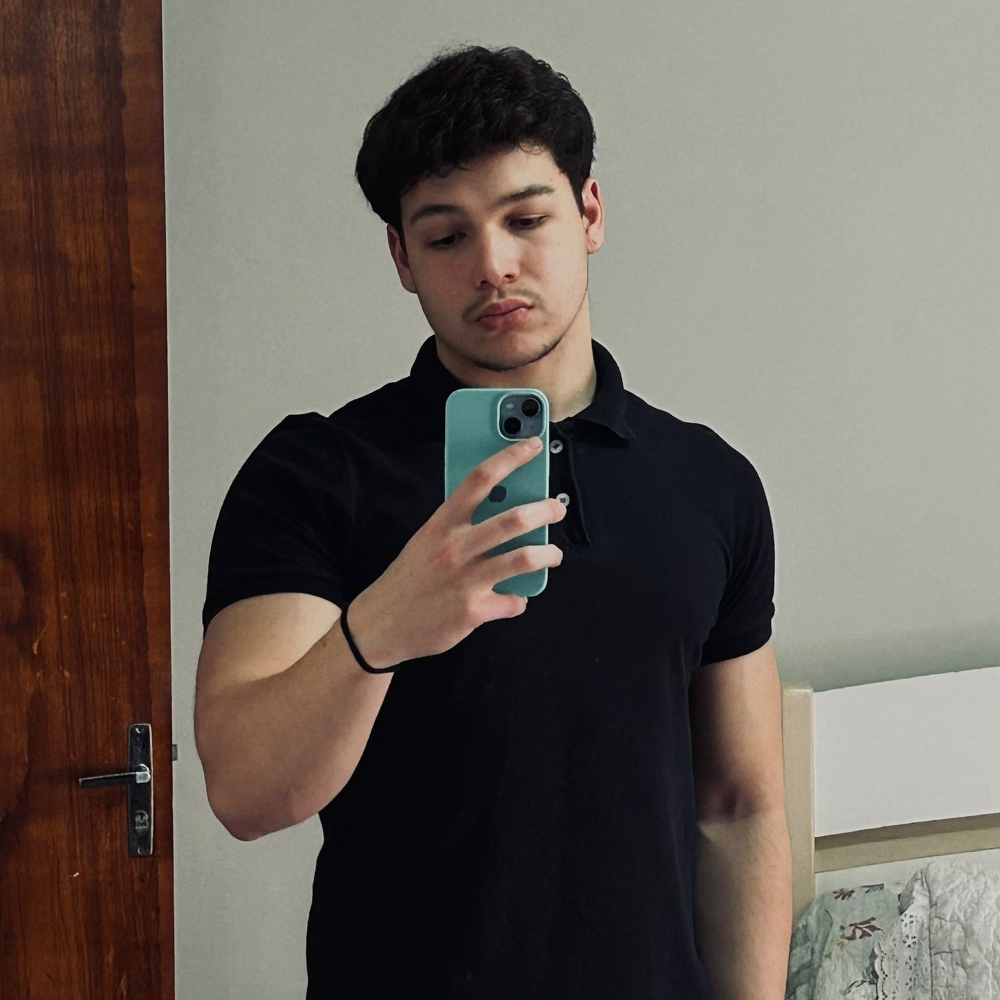

Bom, vou começar me apresentando...
Me chamo Erick Marawieski Dutra, tenho 19 anos, moro em Curitiba-PR, e pretendo trabalhar com TI, ainda não sei em qual área, estou aprendendo e vendo em qual me encaixo e mais gosto também. Atualmente trabalho como assistente administrativo no GRUPOSC, mexo bastante com excel e SAP, mas não para progamar, uso como fonte de consulta, gosto muito de música, meu hobbies favoritos são sair com a minha namorada e ir para a academia. Gosto muito de jogar futebol também, ja cheguei a treinar mas acabei me meachucando e hoje jogo so por lazer. Ainda moro com meus pais, tenho uma irmã que ja casou e tenho muitos sonhos e metas para realizar, quero construir uma família e casar. Isso seria um pouco sobre mim!